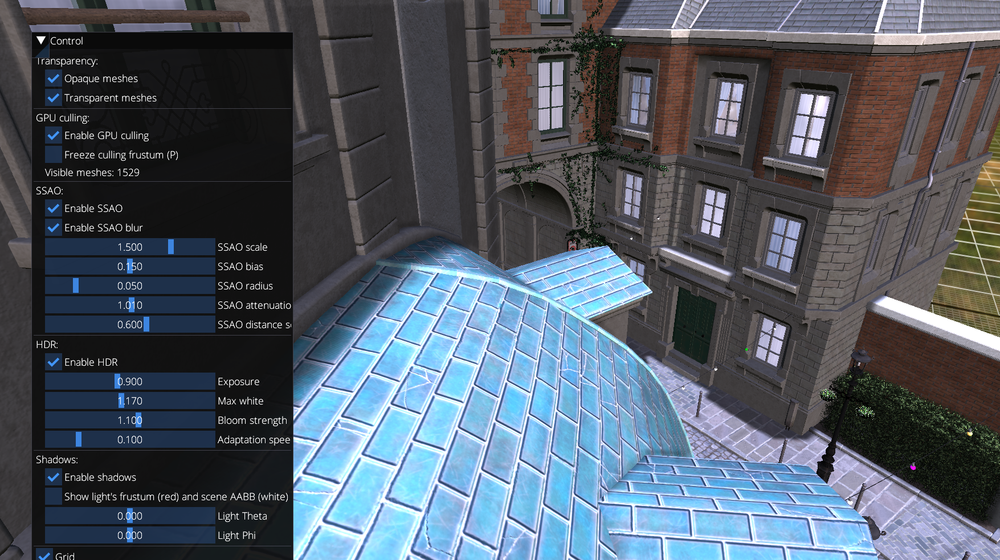
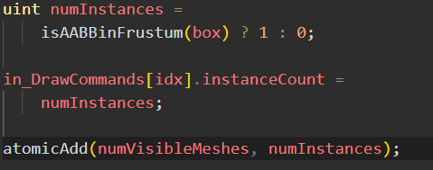
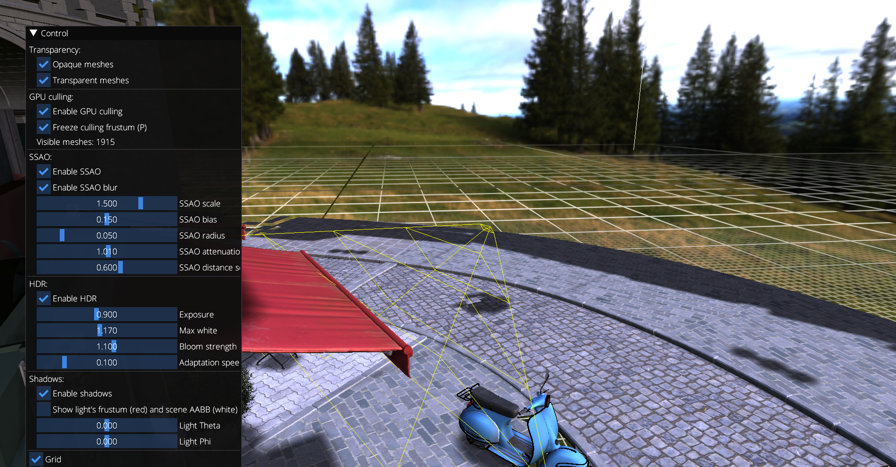
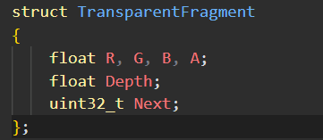
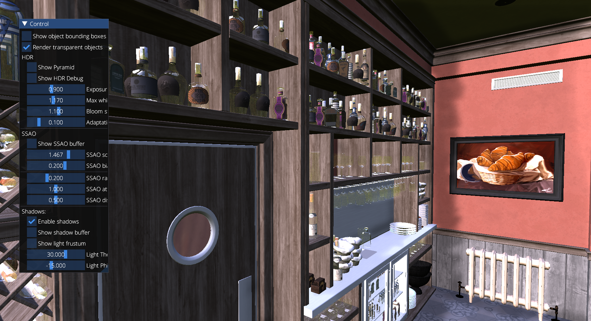

3D rendering Engine
LUMINA is a real-time 3D rendering engine developed around the implementation of a modern GPU-oriented rendering pipeline.

Overview
Lumina grew out of the learning OpenGL, Vulkan and working with their various vendors. This serves as an Open Source [Github] Engine. It is very well capable of handling several computationally expensive rendering techniques which can coexist within a configurable rendering pipeline, namely:GPU-driven rendering, visibility determination, advanced lighting, transparency and post-processing. Various technical attempts have been made to minimize unnecessary CPU interventionand exploit GPU parallelism and organising rendering operations into independently manageable stages.
Technical Approach
I want to emphasis some of the technical features of this engine, that I particularly like
1) GPU driven rendering and visibility determination
the classical rendering architectures frequently perform visibility calculations on the CPU, determining which objects should be submitted to the GPU. This becomes expensive real quickly. Lumina addresses this through compute shaders and indirect drawing commands. more precisely, each mesh is associated with something called an axis-aligned bounding box (AABB). The compute shader evaluates these bounding volumes against the six planes of the camera frustum, objects outside the viewing region are excluded by modifying their indirect drawing commands.

this means that rendering operations can consume the updated commands without requiring the CPU to individually submit a draw call for every visible object and GPU is not exclusive to raycasting geometry, another illustration of this is shown via enabling GPU culling

2) Order dependant transparency
another huge implementation of lumina is the OIT system, we know very well that the covensional alpha blending generally requires transparent objects to be rendered in back-to-front order.This approach quickly runs into problems when you have multiple overlapping surfaces that are transparent, it uses per-pixel linked lists to address this problem. The following fragment structure looks like so

so each transparent fragment stores its colour, depth and
reference to another fragment. An atomic counter allocates
fragment storage, while an integer texture stores the head of
each pixel's linked list. The process follows something
like
1)Rendering opaque geometry normally
2)Capturing
transparent fragments
3)Recording fragment information in GPU
storage buffers
4)Traversing the per-pixel fragment
lists.
5)BOOM! ordered and composed list of
fragments
Tried to have been Illustrated here

the lumina framework implements shadow mapping by rendering scene geometry from the light source's perspective into a depth texture, called the SSAO. Screen-space ambient occlusion estimates local occlusion using depth information, producing darker regions around geometric intersections and enclosed surfaces. the shader will constructs view space depth and evaluate neighbouring samples
Architectural integration and rendering scalability
This is where Vulkan implementation provides an especially
interesting example of combining independent rendering
responsibilities.FinalMultiRenderer coordinates opaque rendering,
transparent rendering, shadow generation and OIT composition.This
also allows us to modify a single rendering stage without touching
the entire pipeline.
So, where do we go on from here? The Obvious answer is to introduce some complex and/or hardware-accelerated rendering like Ray Tracing. An addition for it would be through TLAS(Tol Level acceleration structues) for scenes instances or an entire dedicated acceleration structure resource management, keeping in mind that a hybrid rendering architecture could retain rasterisation for primary visibility while using ray tracing for reflections, ray-traced shadows and selected global-illumination effects